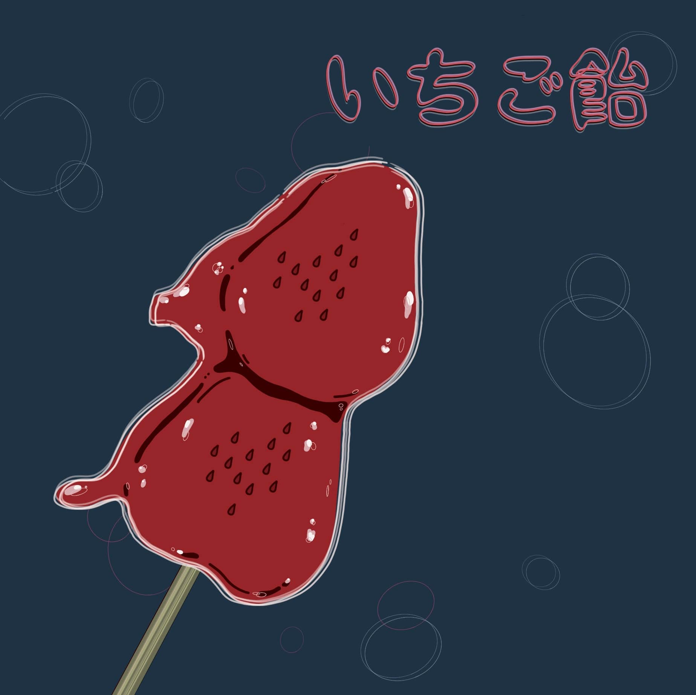

-
【Break Time】
・作成日：2020.7
・iPad ProのProCreateで作成
・見た人がホッとできる色を使い、落ち着いた印象になるように作成いたしました。
-

【いちご飴】
・作成日：2020.6
・iPad ProのProCreateで作成
・思わず女の子が可愛い！と言ってしまういちご飴を描きました。飴のツヤツヤした部分にハートがあるのがポイントです。
-

【Fantasy】
・作成日：2020.6
・iPad ProのProCreateで作成
・夜空を描きました。星以外の彩度を落とし落ち着いた雰囲気の中に星が輝いているイメージを表現しました。
-
【Good night】
・作成日：2020.5
・iPad ProのProCreateで作成
・色数を少なくし、描き方もシンプルに寝る前のリラックスした気持ちを描きました。
-
【あひるとうさぎのどんぶらこ】
・作成日：2020.7
・iPad ProのProCreateで作成
・あひるとうさぎのデート風景。和服を着ておめかしをし、お椀に乗っている様子を書きました。
-
【drawing】
・作成日：2020.5
・アクリル絵具で作成
・平面構成作品。アクリル絵具で描いている様子をイメージして書きました。
-
【夢】
・作成日：2013.10
・アクリル絵具で作成
・学生時代の作品。夢の中の不思議な感覚を描きました。少しずつパズルが崩れていき、目覚めを迎えるイメージを表現しています。受賞作品。
-
【Look at the sky】
・作成日：2018.7
・アクリル絵具で作成
・星を辿り行先には何があるのか？夜空を見上げて歩いて行きたくなる世界をイメージ。
-
【不思議な国へ】
・作成日：2013.9
・ミクストメディア作品
・現実世界と非現実世界を分けて感じていただきたく、少女は絵具と色鉛筆で描き、うさぎやその周りの花は、フェルト生地やふわふわな生地で作成しました。
-
【謎生物】
・作成日：2017.5
・空想デッサン
・手に持っているガラスから空想し描きました。丸いガラスから丸い謎の生物がコロコロ出てきている様子を描きました。